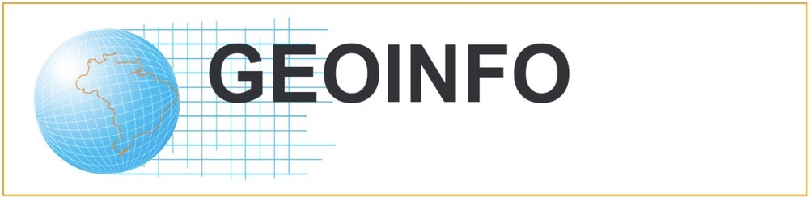
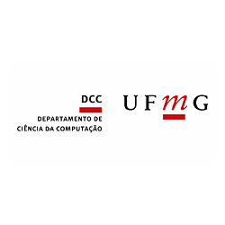

May 19 to 21, 2025
INPE, São José dos Campos, SP, Brazil
Home
Call for Papers
Paper submission
Registration
Programme
Venue
Program Committee
Organization
Collection
XXV Brazilian Symposium on Geoinformatics - GEOINFO 2025
Spatial Data Science and Applications
Program Committee
Ana Clara Moura
- UFMG
Ana Lucia Bezerra Candeias
- UFPE
Antonio Miguel Monteiro
- INPE
Camilo Rennó
- INPE
Carla Macario
- EMBRAPA
Carlos Felgueiras
- INPE
Claudia Almeida
- INPE
Claudia Bauzer Medeiros
- UNICAMP
Claudia Robbi-Slutter
- UFRGS
Claudio Baptista
- UFCG
Claudio Campelo
- UFCG
Clodoveu Davis (coordinator)
- UFMG
Diego Tomasiello
- USP
Elcio Shiguemori
- IEAv
Evlyn Novo
- INPE
Fabiano Morelli
- INPE
Fabrício Galende
- INPE
Flavia Feitosa
- UFABC
Gilberto Queiroz
- INPE
Jorge Campos
- UNEB
Julio Esquerdo
- EMBRAPA
Karine Ferreira
- INPE
Karla Fook
- ITA
Laercio Namikawa
- INPE
Leonardo Santos
- CEMADEN
Lubia Vinhas
- INPE
Marconi Pereira
- UFSJ
Marcos Adami
- INPE
Maria Isabel Escada
- INPE
Michel Eustáquio Dantas Chaves
- UNESP
Pedro Andrade
- INPE
Rafael Santos
- INPE
Rodrigo Smarzaro
- UFV
Rogerio Negri
- UNESP
Sergio Rosim
- INPE
Sidnei Santanna
- INPE
Silvana Amaral
- INPE
Tathiane Anazawa
- UNICAMP
Tatiana Pará
- IFPA
Thales Körting
- INPE
Valdivino Alexandre Santiago Júnior
- INPE
Valeria Times
- UFPE
Vander Freitas
- UFOP
Organized by

Support
All questions about submissions should be emailed to
geoinformatica.brasil@gmail.com